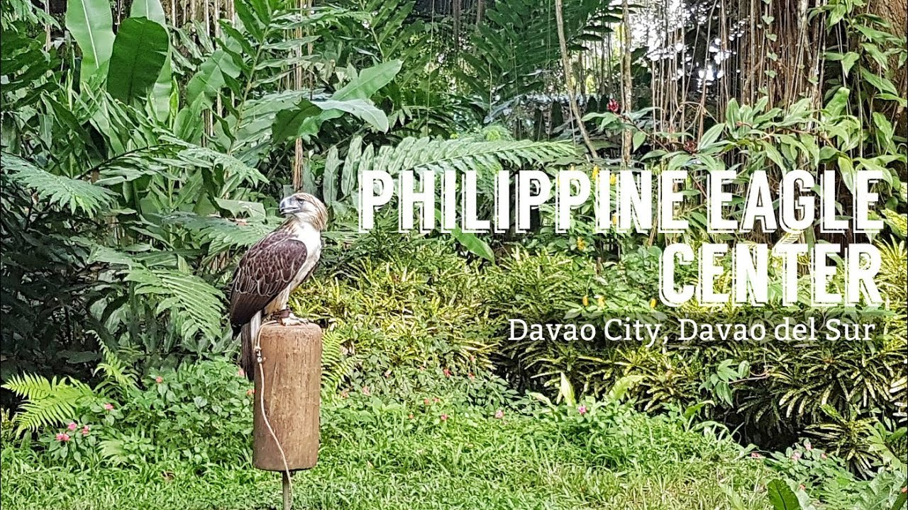
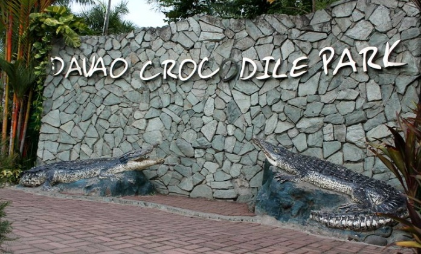
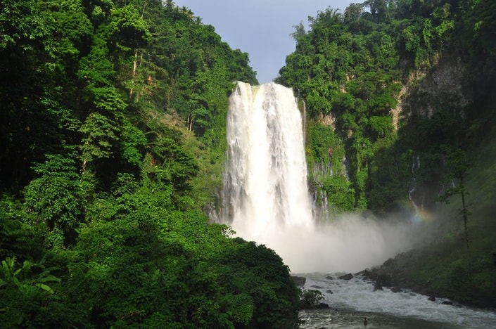
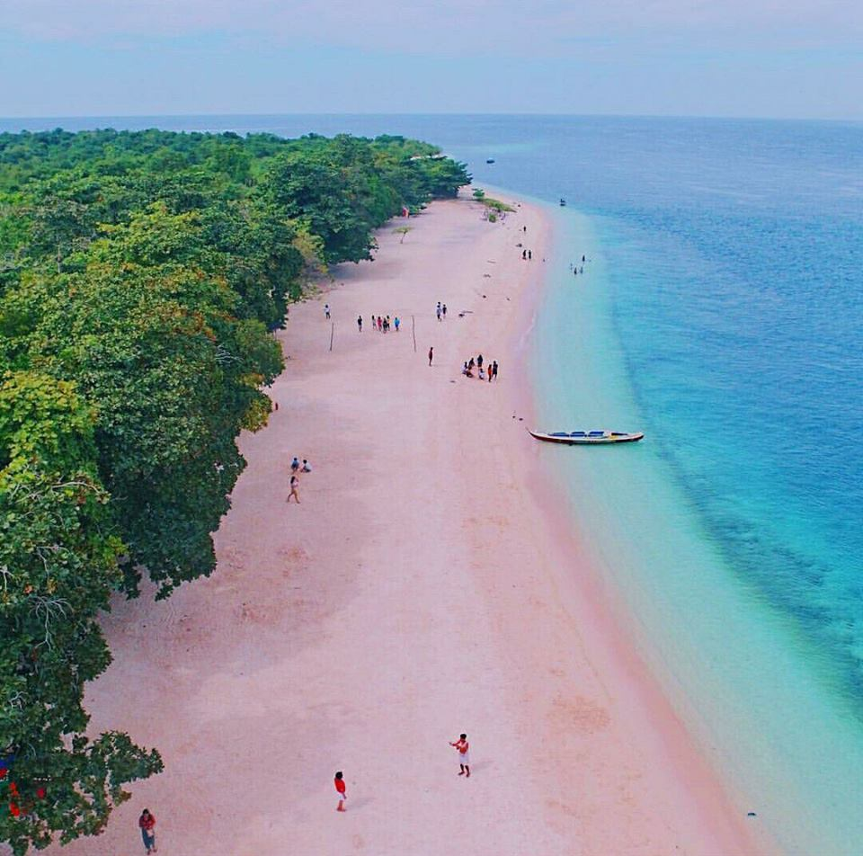

Tourist Spots in Mindanao
- Davao - Philippine eagle Center
- Philippine Eagles are found on the islands of Mindanao, Luzon, Leyte, and Samar.
Mount Kitanglad is said to be one of the most popular places to see a Philippine Eagle in the wild.

- Davao - Crocodile Park
- It promotes crocodile conservation in the Philippines, as well as a
venue for showcasing how crocodiles are farmed. It's a wonderful way to experience the Philippines'
natural and cultural wonders.

- Maria Christina Falls
- Maria Cristina Falls is a waterfall of the Agus River in the Northern Mindanao region
of the Philippines. It is sometimes called the "twin falls" as the flow is separated by a rock at
the brink of the waterfall..

- Zambonga - Santa Cruz Island (Pink Sand Beach)
- Sta. Cruz Island gets its unique color from bright red organ-pipe coral
(tubipora musica) dissolved by the waves. Surf erosion causes the corals to turn into tiny red
particles which gets mixed in the existing white sand, giving the beach a rosy hue.
